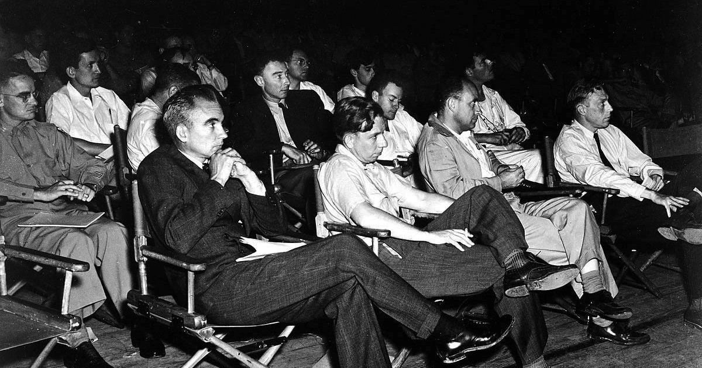
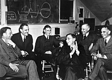
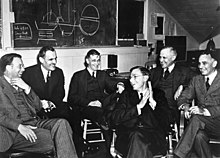

Historia del Proyecto Manhattan
El desarrollo de bombas nucleares fue un secreto celosamente guardado durante la Segunda Guerra Mundial. El Proyecto Manhattan era el nombre en clave del proyecto secreto del gobierno estadounidense para desarrollar la bomba atómica. Dirigido por el físico J. Robert Oppenheimer, el proyecto comenzó en 1942 y llegó a emplear a más de 130.000 personas en su punto álgido. La primera prueba con éxito de una bomba atómica tuvo lugar el 16 de julio de 1945 en el centro de pruebas Trinity de Nuevo México.
Figuras clave del Proyecto Manhattan
Algunas de las figuras clave implicadas en el Proyecto Manhattan fueron:
- J. Robert Oppenheimer
- Enrico Fermi
- Leslie Groves
- Edward Teller



Científicos del Laboratorio Los Álamos del Proyecto Manhattan.